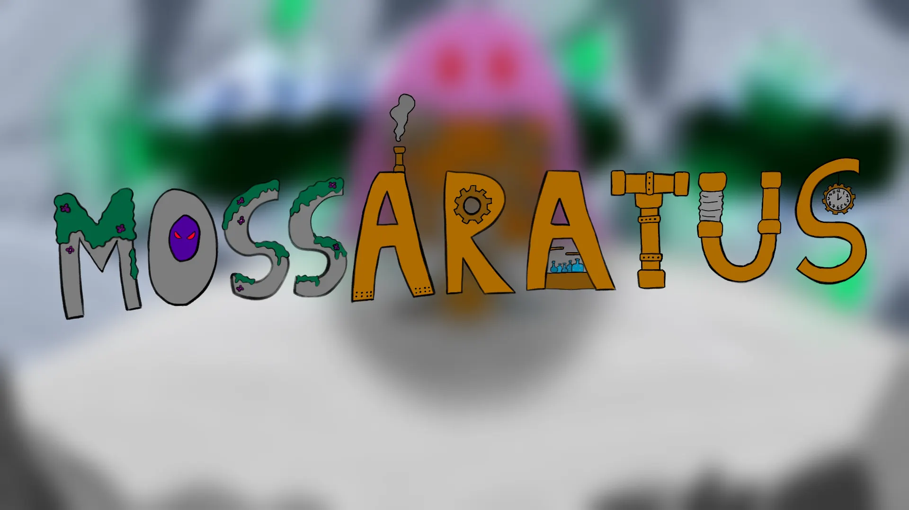

Featured project
Mossaratus
I am quite fond of the final result we managed to achieve with this game in so few days.
A six-armed movement shooter in a mossy CRT world, where every trigger pull fires three guns at once.
Mossaratus is a first person movement shooter where the objective is for the player to survive increasingly harder hordes of enemies. The core distintion that separates it from other similar games is that you are a robot with 6 arms allowing you to carry 6 total weapons simultaneously! You can shoot either all your right side weapons or your left side weapons at a time. A surprise awaits you at the last wave.
View full project details